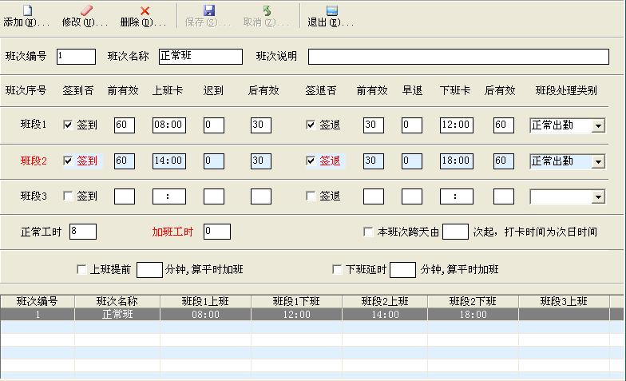
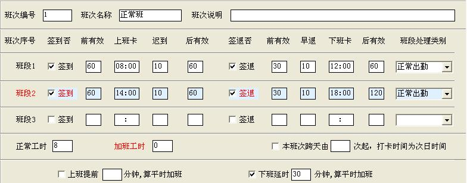

班次定义：
功能简介： 就是员工上下班的标准，就是考勤的标准，其重要性不言而喻。班次定义如下图所示：

企业可以根据自己的需要可以设置多个班次。在设置每一个班次之前先输入属于该班次唯一的编号和班次名称方便查阅。
班段：指上下班时间固定的班段如：08:00-12:00.(此考勤系统每一个班次最多可以定义三个上班时间段)
签到（上班）、签退（下班）：是每一个上下班打卡的根据，当上下班要求打卡时就必须分别要打上勾。
前有效、后有效：是表示上下班打时间有效范围，否则如果此范围内没有打卡时间系统将会判断您少打卡一次。
迟到、早退：表示在此时间内不记迟到、早退的时间（单位：分钟）如:迟到、早退各设置为10分钟，则表示在10分钟内打卡上下班不记迟到和早退）。
班段处理类别：表示此上班时段所属的类别。如：正常出勤、平时加班、周末加班、假日加班。
正常工时、加班工时：正常工时表示在此组班次中正常出勤的工作小时总数，加班工时表示在此组班次中加班(平时加班、周末加班、假日加班)的加班小时总数。正常工时和加班工时由系统自动计算不手工输入。
本班次跨天：是指由于企业的需要一个班在可能需要跨天（比如：晚班），这是就必须要在此处打上“√”并填写是在那一次打卡才开始跨天的。如：在班段2中下班时间已经跨天了，则在次处填写数字“4”即可。
上班提前多少分钟算平时加班：是指如果在规定上班的时间之前打卡并且在此处打“√”符合此处设置的所设置的条件，则计算是平时加班(如：提前30分钟算加班那么必须要打“√”并且在文本框内填写30)。
下班延时多少分钟算平时加班：是指如果在规定下班的时间之后打卡并且在此处打“√”符合此处设置的所设置的条件，则计算是平时加班(如：延时30分钟算加班那么必须要打“√”并且在文本框内填写30)。
班次设置举例:有一正常出勤班次上午上班时间为:08:00-12：00，下午上班时间为14:00-18:00。上下午上班都允许提前1个小时打卡和延后1小时打卡,上午下班允许提前30分钟打卡和延后1小时打卡，下午下班允许提前30分钟打卡和延后2小时打卡,并且在10分钟内不记迟到和早退，下班打卡时间在下班后30分钟算平时加班。设置如下图所示：
